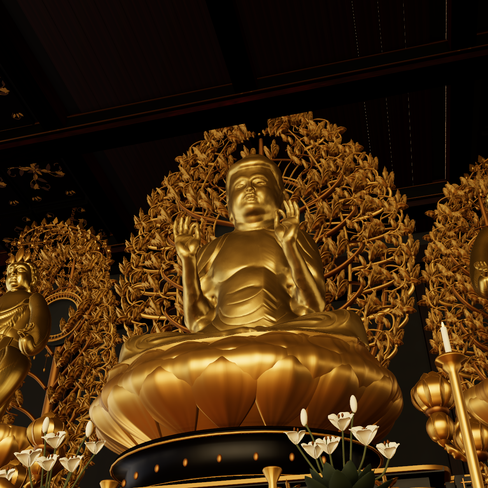
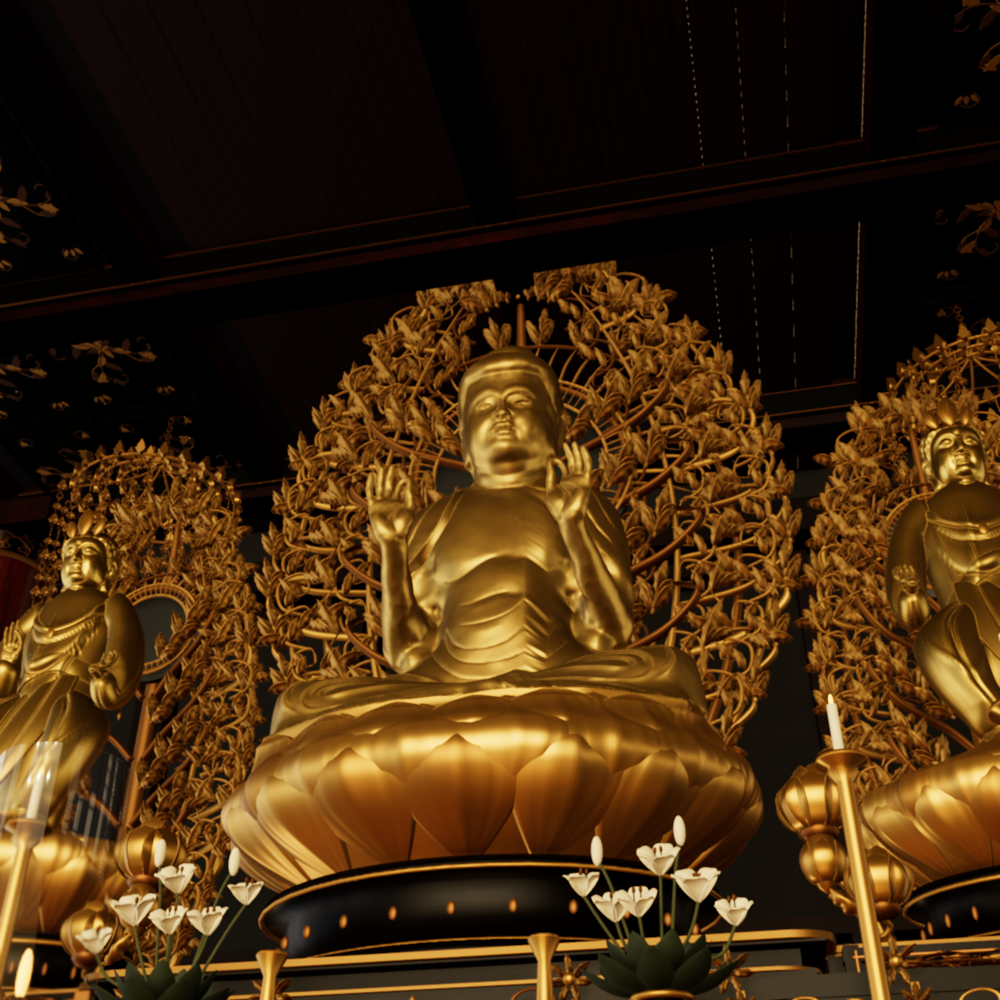
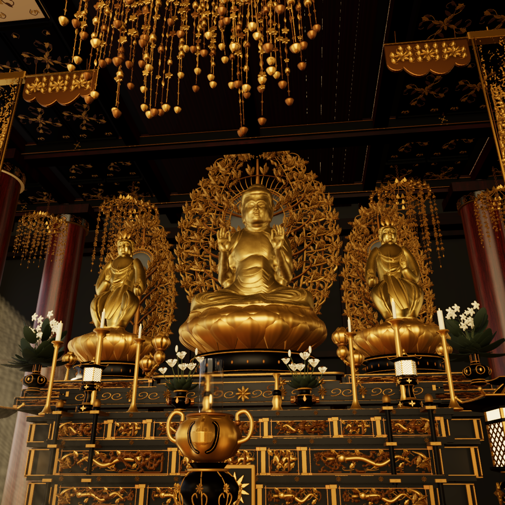
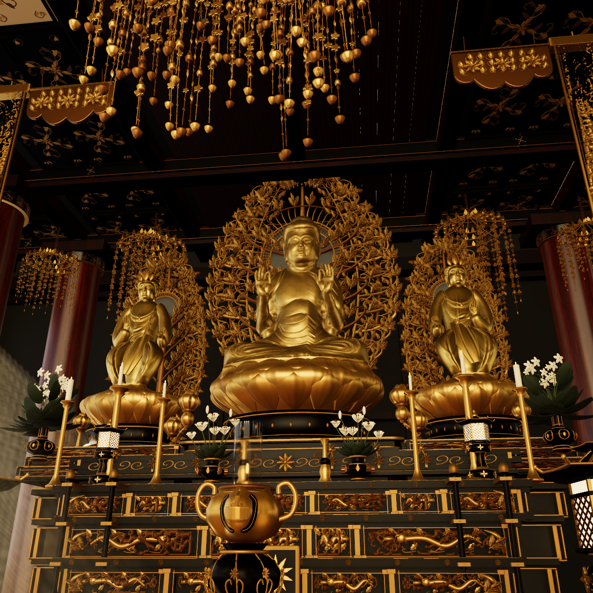

Left: preserved R01. Right: R02 measured face anchor and main-figure DOF disabled, f11 parameter. Same actual positions, orientations, FOV and199 other R08 scene files. Original native1254 PNGs below have no image edits. Eyes/lips/robe were visually checked at0/1.75/3.5s; no animated focus transition remains.
Exact source/proof/limits · Labeled face-pixel inspection crops · All five R02 poses




Derived imagery CC BY-NC-SA4 for authorized personal noncommercial use. No geometry, scalp, material, lighting or movie changes.